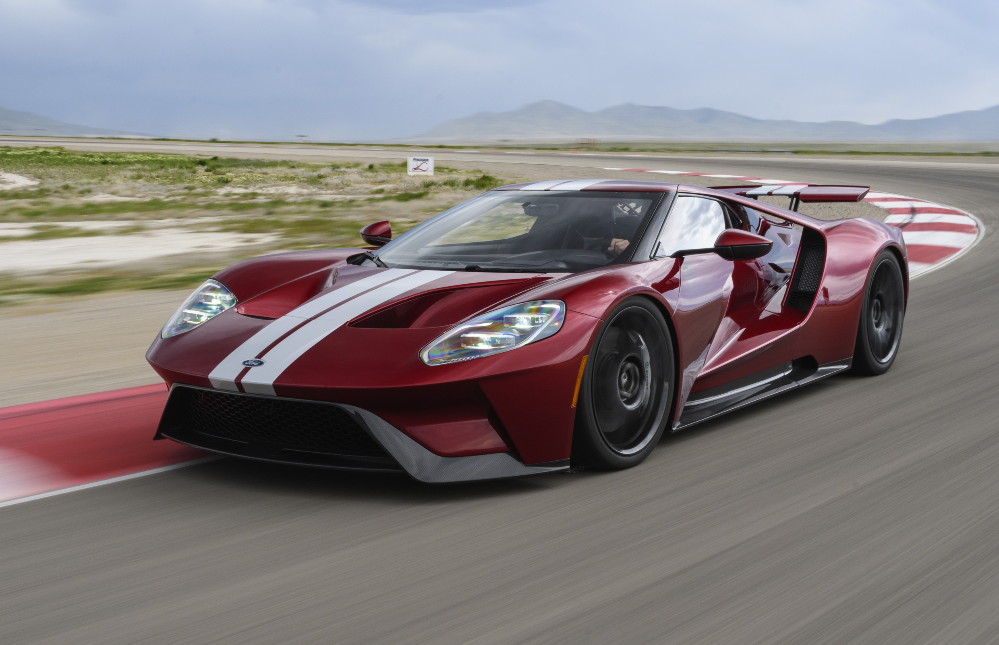

Everything you need to know about Supercars

According to everything we could find on the web, a supercar is a vehicle in “the top range of today’s performance cars.” It’s not a rigid designation, but it is commonly understood to mean a car with vastly superior performance, technology and design. Usually bearing a price tag from the low-six to high-six figures (in US dollars). The “performance” angle distinguishes a supercar from top-of-the-line luxury marques like Bentley, Maybach and Rolls Royce. They’re expensive and ultra-luxurious – but they’re not supercars. A hypercar is the top one percent of supercars. Meaning, they have the best performance and design in the world, and their sales price is going to be over seven figures (in US dollars).
Top #3 Fastest cars of 2020
#3 Ford GT
The myth and mystique of the Ford GT, stretching back more than five decades to the GT40’s string of successive victories at Le Mans, would have given this car a larger-than-life presence in any class in which we put it – and lends it an appeal that’s utterly unique and difficult to quantify. although it doesn’t howl like an Italian V12, its 647bhp V6 can still hurl you down the road with undiluted motorsport venom. A very special car, this, the likes of which don’t come along often.